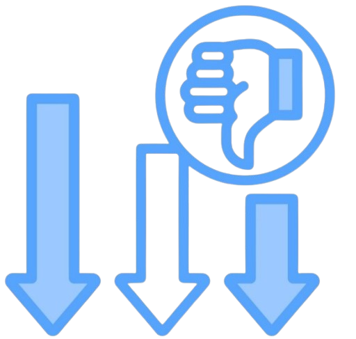

Slabosti
Pametni domovi kljub številnim prednostim prinašajo tudi nekatere slabosti, ki jih uporabniki ne morejo prezreti. Ena od pogostejših težav  je odvisnost od internetne povezave. Ker večina pametnih naprav deluje preko spleta, lahko že kratek izpad povezave povzroči nedelovanje ključnih funkcij, kot so ogrevanje, razsvetljava ali dostop do doma. V takih primerih lahko uporabnik začasno izgubi nadzor nad sistemi, kar lahko povzroči nelagodje ali celo varnostna tveganja.
Težave se lahko pojavijo tudi pri sami integraciji različnih naprav. Čeprav številni proizvajalci ponujajo pametne naprave, vse te niso nujno medsebojno združljive. To pomeni, da uporabniki pogosto potrebujejo več aplikacij za upravljanje različnih sistemov ali pa se morajo odločiti za celoten ekosistem enega proizvajalca, kar omejuje njihovo izbiro in poveča stroške.
Povezana s tem je tudi kompleksnost same uporabe. Čeprav pametni domovi na videz delujejo preprosto, lahko njihova nastavitev in vzdrževanje zahtevata določeno tehnično znanje. Nekaterim uporabnikom je upravljanje prek aplikacij in glasovnih pomočnikov neintuitivno, še posebej če gre za starejše ali manj tehnično podkovane posameznike. Poleg tega lahko pride do tehničnih napak, ki jih brez pomoči strokovnjaka ni mogoče hitro odpraviti.
Varnost podatkov je še en pomemben izziv. Pametni domovi zbirajo in obdelujejo veliko količino osebnih informacij – od urnikov uporabnikov do vzorcev gibanja po stanovanju. Če sistemi niso ustrezno zaščiteni, obstaja možnost vdora ali zlorabe teh podatkov. Uporabniki se zato pogosto sprašujejo, koliko zasebnosti v resnici žrtvujejo v zameno za udobje.
Določeni primeri iz prakse kažejo tudi na to, da lahko tehnične težave vodijo do popolne izgube nadzora nad domom. Napake pri nadgradnjah sistemov, nepravilno delovanje aplikacij ali celo zunanji motilci signala lahko povzročijo, da uporabnik ostane zaklenjen iz svojega doma ali ne more upravljati osnovnih funkcij, kot so odklepanje vrat ali upravljanje ogrevanja.
Dodatno oviro predstavlja tudi cena. Čeprav so nekatere osnovne pametne naprave cenovno dostopne, celostna nadgradnja doma v pametni sistem lahko predstavlja velik finančni zalogaj. Stroški vključujejo ne le naprave, ampak tudi namestitev, dodatno opremo, naročnine za nekatere storitve in morebitne popravke v primeru okvar.
Ne smemo pozabiti tudi na hiter razvoj tehnologije, ki prinaša stalne posodobitve in nove naprave, zaradi česar že vgrajeni sistemi lahko hitro zastarajo. To pomeni, da se uporabniki pogosto znajdejo pred izbiro med drago nadgradnjo ali uporabo zastarelih sistemov, ki ne ponujajo več optimalne funkcionalnosti.
Čeprav pametni domovi ponujajo izjemne možnosti, je pomembno, da se uporabniki zavedajo tudi njihovih omejitev. Le s premišljenim pristopom in dobro informiranostjo se lahko izognejo neprijetnostim in v celoti izkoristijo prednosti, ki jih sodobna tehnologija omogoča.